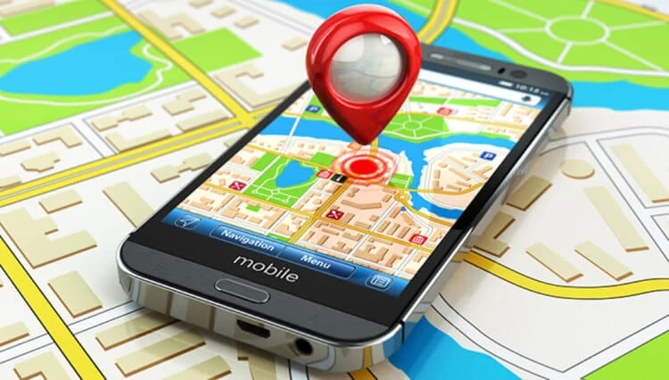

Тема 2: Де застосовується фізика в GPS-навігаторі
Автомобільна навігація
GPS широко використовується в автомобілях для навігації та розрахунку оптимальних маршрутів. Ось як це відбувається:
* GPS-приймач: Автомобільний навігатор обладнаний приймачем GPS, який отримує сигнали від супутників GPS, що знаходяться в орбіті Землі. Ці сигнали містять інформацію про місцезнаходження супутника та час надсилання сигналу.
* Визначення поточного розташування: GPS-приймач аналізує сигнали від декількох супутників і, використовуючи метод трилатерації, визначає поточне місцезнаходження автомобіля з високою точністю.
* Цифрові карти: Вбудовані в навігатор або завантажені на нього цифрові карти містять інформацію про дороги, вулиці, пункти призначення та інші об'єкти. Ці карти надають важливу інформацію для навігації.
* Введення користувача: Користувач вводить дані про своє призначення або вибирає точку на карті, до якої він хоче прибути. Можна також вказати кращі параметри маршруту, такі як оптимальний час, найкоротший шлях або уникнення доріг з певними характеристиками (наприклад, платних автострад або ґрунтових доріг).
* Розрахунок оптимального маршруту: З урахуванням поточного розташування та цільового пункту навігатор обчислює оптимальний маршрут для досягнення мети. Цей розрахунок враховує дорожні умови, пробки, швидкість руху та інші фактори, щоб запропонувати найшвидший чи найкоротший маршрут.
* Голосові та візуальні вказівки: Навігатор відображає маршрут на екрані та зазвичай надає голосові інструкції. Водій отримує вказівки про те, коли і куди повертати, яку смугу руху обирати та іншу інформацію, щоб слідувати маршрутом без труднощів.
* Динамічне оновлення: Багато навігаційних систем оновлюють інформацію про дорожні умови в реальному часі, щоб надати водієві актуальні поради про пробки, аварії або інші затримки на маршруті. Це дозволяє вибирати альтернативні шляхи, щоб уникнути заторів.
* Відстеження руху та дорожні точки: Навігатор може відстежувати рух автомобіля в реальному часі та відзначати досягнуті дорожні точки, що корисно для проходження складних маршрутів або пошуку конкретних місць.
* Визначення поточного розташування: GPS-приймач аналізує сигнали від декількох супутників і, використовуючи метод трилатерації, визначає поточне місцезнаходження автомобіля з високою точністю.
* Цифрові карти: Вбудовані в навігатор або завантажені на нього цифрові карти містять інформацію про дороги, вулиці, пункти призначення та інші об'єкти. Ці карти надають важливу інформацію для навігації.
* Введення користувача: Користувач вводить дані про своє призначення або вибирає точку на карті, до якої він хоче прибути. Можна також вказати кращі параметри маршруту, такі як оптимальний час, найкоротший шлях або уникнення доріг з певними характеристиками (наприклад, платних автострад або ґрунтових доріг).
* Розрахунок оптимального маршруту: З урахуванням поточного розташування та цільового пункту навігатор обчислює оптимальний маршрут для досягнення мети. Цей розрахунок враховує дорожні умови, пробки, швидкість руху та інші фактори, щоб запропонувати найшвидший чи найкоротший маршрут.
* Голосові та візуальні вказівки: Навігатор відображає маршрут на екрані та зазвичай надає голосові інструкції. Водій отримує вказівки про те, коли і куди повертати, яку смугу руху обирати та іншу інформацію, щоб слідувати маршрутом без труднощів.
* Динамічне оновлення: Багато навігаційних систем оновлюють інформацію про дорожні умови в реальному часі, щоб надати водієві актуальні поради про пробки, аварії або інші затримки на маршруті. Це дозволяє вибирати альтернативні шляхи, щоб уникнути заторів.
* Відстеження руху та дорожні точки: Навігатор може відстежувати рух автомобіля в реальному часі та відзначати досягнуті дорожні точки, що корисно для проходження складних маршрутів або пошуку конкретних місць.
Мореплавання та авіація
GPS имеет критическое значение в навигации судов и самолетов, особенно в случаях, где точность является жизненно важной. Вот некоторые области применения GPS в мореплавании и авиации:
* Підходи та посадки: GPS-прилади, такі як системи ILS (Instrument Landing System) та WAAS (Wide Area Augmentation System), використовуються для точного наведення літака на смугу. Це особливо важливо за складних метеорологічних умов або аеропортів з обмеженою видимістю.
* Пошук та порятунок: GPS-координати можуть бути передані службам пошуку та порятунку у разі надзвичайних ситуацій, таких як втрата літака або аварія. Це прискорює та полегшує процес пошуку та порятунку.
* Три крапки: Для визначення точного розташування, приймач GPS повинен виміряти відстань до декількох супутників (зазвичай трьох або більше). Це можна зробити, знаючи тимчасові затримки для кожного із супутників.
* Забезпечення безпеки: GPS також відіграє важливу роль у забезпеченні безпеки мореплавання. Системи попередження про близьке зближення (AIS - Automatic Identification System) використовують GPS для відстеження руху інших суден та запобігання зіткненням.
* Гідрографія та картографія: GPS дозволяє збирати геопросторові дані, які використовуються для оновлення навігаційних та морських карт. Це важливо для того, щоб моряки могли оперувати на актуальній та надійній інформації.
* Пошук та порятунок: Як і в авіації, GPS-координати можуть бути використані в мореплаванні для пошуку та порятунку у разі лиха на морі. Це допомагає рятувальним службам швидко знайти та допомогти судам чи людям у біді.
Авіація:
* Навігація в польоті: GPS використовується в повітряних суднах для визначення та контролю їхнього розташування в реальному часі. Це дозволяє пілотам точно слідувати заданому маршруту, уникати зіткнень та виконувати безпечні посадки в аеропортах.* Підходи та посадки: GPS-прилади, такі як системи ILS (Instrument Landing System) та WAAS (Wide Area Augmentation System), використовуються для точного наведення літака на смугу. Це особливо важливо за складних метеорологічних умов або аеропортів з обмеженою видимістю.
* Пошук та порятунок: GPS-координати можуть бути передані службам пошуку та порятунку у разі надзвичайних ситуацій, таких як втрата літака або аварія. Це прискорює та полегшує процес пошуку та порятунку.
* Три крапки: Для визначення точного розташування, приймач GPS повинен виміряти відстань до декількох супутників (зазвичай трьох або більше). Це можна зробити, знаючи тимчасові затримки для кожного із супутників.
Мореплавання:
* Навігація по морю: У мореплаванні GPS використовується для визначення точного розташування судна у відкритому морі. Це допомагає капітанам та екіпажам керувати судном, уникати підводних перешкод і слідувати заданому маршруту.* Забезпечення безпеки: GPS також відіграє важливу роль у забезпеченні безпеки мореплавання. Системи попередження про близьке зближення (AIS - Automatic Identification System) використовують GPS для відстеження руху інших суден та запобігання зіткненням.
* Гідрографія та картографія: GPS дозволяє збирати геопросторові дані, які використовуються для оновлення навігаційних та морських карт. Це важливо для того, щоб моряки могли оперувати на актуальній та надійній інформації.
* Пошук та порятунок: Як і в авіації, GPS-координати можуть бути використані в мореплаванні для пошуку та порятунку у разі лиха на морі. Це допомагає рятувальним службам швидко знайти та допомогти судам чи людям у біді.
Спортивні трекери
Сучасні GPS-пристрої відіграють важливу роль у спортивних трекерах та фітнес-гаджетах, надаючи користувачам детальну інформацію про їх фізичну активність та місцезнаходження. Ось як вони використовуються:* Відстеження розташування: Спортивні трекери з вбудованим GPS можуть точно відстежувати розташування користувача в реальному часі. Це дозволяє спортсменам та активним людям стежити за своїми маршрутами та дистанціями, а також робити записи про місця, які вони відвідують під час тренувань чи активного відпочинку.
* Вимірювання дистанції та швидкості: GPS-технологія дозволяє точно вимірювати дистанцію, яку користувач долає під час бігу, велосипедних прогулянок, плавання та інших видів активності. Це дозволяє спортсменам встановити свої рекорди, відстежувати покращення у своїй продуктивності та планувати свої тренування більш ефективно.
* Висота та нахил: Деякі GPS-пристрої також можуть вимірювати висоту над рівнем моря та нахил поверхні, що корисно для велосипедистів та бігунів під час тренувань на горбистих маршрутах.
* Розрахунок темпу: GPS-трекери можуть розраховувати поточний темп (швидкість) користувача на основі його розташування та часу, що допомагає спортсменам керувати своїми зусиллями та підтримувати бажану інтенсивність тренування.
* Картографія та навігація: Деякі спортивні трекери мають функції картографії та навігації, які дозволяють користувачам завантажувати маршрути, слідувати за межами заздалегідь спланованих трас та знаходити шлях назад до початкової точки.
* Історія та аналіз даних: Спортивні трекери з GPS зберігають історію тренувань, яку користувачі можуть переглядати та аналізувати. Це допомагає оцінити прогрес, встановити нові цілі та коригувати тренувальні плани.
* Змагання та спілкування: Деякі спортивні трекери дозволяють користувачам брати участь у віртуальних змаганнях з іншими учасниками та ділитися своїми результатами у соціальних мережах чи спортивних спільнотах.